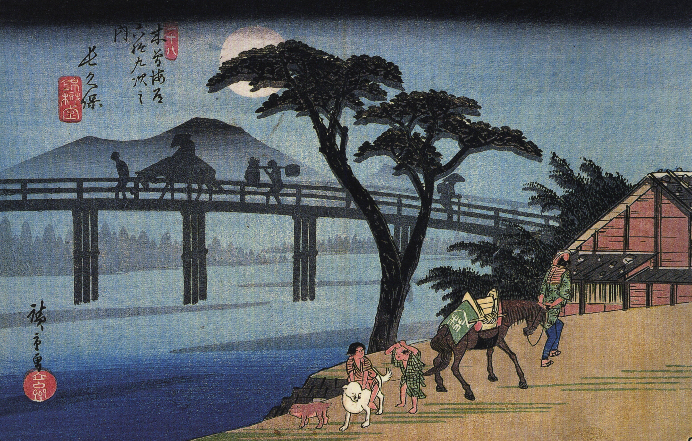

Période Edo 江戸時代 (1603-1868) Sakoku 鎖国 instaure la fermeture des portes du pays. Nul n’entre nul ne sort ! Ce statut perdura jusqu’à l’arrivée du commandant Perry et de ses quatre cuirassiers. Cependant, lors de cette période de repli sur soi appelée Sakoku, le pays en paix développe une nouvelle vague d’art avec le bunraku文楽 et les ukiyo-e浮世絵. La population augmente, de nombreuses routes et écoles sont construites et les technologies étrangères sont étudiées à travers les livres hollandais : le rangaku蘭学. C’est alors que le commandant américain et sa flotte arrivent dans la baie d’Edo en 1853. Il force le Japon à rouvrir ses frontières en signant avec Abe Masashiro la convention de Kanagawa. Ce traité autorise dès lors l’accès aux ports aux USA, à l’Angleterre et à la Russie. Ce traité sera suivi en 1858 par le traité Harris aussi connu sous le nom du traité d’Amitié et de Commerce, un nouveau « traité inégal ».
L’empire du Japon (ère Meiji 明治 (1868-1911) – ère Taisho 大正 (1911-1926) – début ère Showa 昭和 (1926-1945)) Ce dernier s’installera à Edo mais rebaptisera la ville Tokyo, capitale de l’Est. Ce qui est un peu moins connu du public c’est que la France et l’Angleterre ont dans une certaine mesure, participés à cette guerre. En effet, le second empire français supporta le shogun et l’Angleterre enseigna l’art de la guerre occidentale aux shichi qui rêvaient de l’«Esprit japonais, technologies occidentales ». Cependant, de nombreux samourais se sentiront par la suite trahis par l’empereur qui continuera à occidentaliser son cabinet et son gouvernement. Certains supporters du shogunat qui s’enfuirent jusqu’à Hokkaido proclameront cette terre la république d’Ezo 蝦夷共和国 et il faudra attendre 1869 et la bataille d’Hakodate pour que l’empereur soit maître du Japon tel que nous le connaissons.